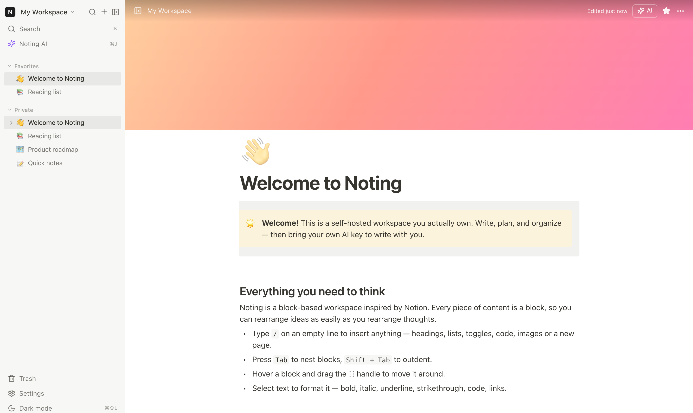

Blocks that behave
Type, drag and indent. Every heading, to do, toggle, callout and code block is a block you can move with a handle. Markdown shortcuts work too.
Open source · Apache 2.0 · Runs offline
Noting is a block editor with nested pages, databases and an AI panel that runs on your own key. Every note sits in a SQLite file on your machine, not in someone else's cloud.
Free and open source. No account, no telemetry, no sync service.

Features
The editor, the databases and the search are all local. The AI panel is optional, and it uses a key you already have.
Type, drag and indent. Every heading, to do, toggle, callout and code block is a block you can move with a handle. Markdown shortcuts work too.
Tables and boards with select, date, checkbox and URL properties. Sort them, edit inline, and open a row when you need the detail.
Press ⌘K to open pages and actions without touching the mouse. Full text search covers titles and every block inside them.
OpenAI, Anthropic, DeepSeek or any OpenAI compatible endpoint. Your key stays in the browser and never reaches the database.
Pages, blocks, uploads and databases live in one SQLite file. Stop the server, copy the folder, and the backup is done.
Follow the system or pick light or dark yourself. The app is local, so it keeps working when the network does not.
Setup
Grab the build for your platform from GitHub Releases. The desktop app keeps notes in your user data folder.
Clone the repo and run one command. The server listens on port 4000 and stores everything in a Docker volume.
A small demo workspace is created on first run. Delete it when you start your own pages.
$ docker compose up -d --build
noting built in 12.4s
noting running
$ open http://localhost:4000
Your data stays in ./data/noting.db and the uploads folder beside it.
FAQ
The things people ask before they move their notes.
Yes. The code is Apache 2.0 and there is no paid tier, no seat count and no hosted plan to upsell you. You pay for your own hardware and, if you use one, your own AI key.
Notion keeps your pages on their servers. Noting keeps them in a SQLite file you can open, copy and back up. It also ships no telemetry and lets you bring any OpenAI compatible model.
In the desktop app they live in your OS application data folder. In Docker they live in the /data volume. Either way it is one SQLite file plus an uploads folder.
It stays in your browser's local storage and is sent to your own Noting server only when you ask for something. The server forwards the request to the provider you picked. Keys are never written to SQLite and never logged.
No. Only the text you send from the AI panel, plus the page context you include, reaches the provider. Nothing is indexed in the background.
There is no mobile app yet. You can open your server in a mobile browser over your local network or a private tunnel. Set NOTING_PASSWORD and put HTTPS in front before you expose it to the internet.
Not yet. Pages export to Markdown today. Importers are on the list, and the SQLite schema is small enough to script against if you cannot wait.
Not by default. macOS may ask you to right click and choose Open the first time. Signed builds appear once the Apple and Windows signing secrets are configured in the repo.
Get started
Download the desktop app, or run the server yourself. Either path takes about a minute and leaves you with a file you can keep.
Apache 2.0 · No account required · Works offline